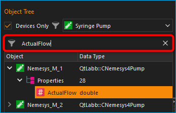
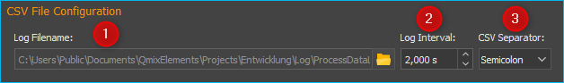

CSV-Datenlogger
Einführung
Mit dem Datalogger-Plugin erhalten Sie ein leistungsfähiges Werkzeug zur Aufzeichnung beliebiger Prozessdaten von beliebigen Geräten in eine CSV-Datei. Das Dateiformat CSV steht für englisch Comma-separated values (seltener Character-separated values) und beschreibt den Aufbau einer Textdatei zur Speicherung oder zum Austausch einfach strukturierter Daten. Die Dateinamenserweiterung lautet csv.
Tipp
CSV-Dateien können, wenn Sie das richtige Trennzeichen und das richtige Dezimalzeichen verwenden, ohne Probleme im Tabellenkalkulationsprogramm Microsoft Excel geöffnet und weiterverarbeitet werden.
Konfigurationsdialog
Konfigurationsdialog aufrufen

Wenn das Datalogger-Plugin geladen wurde, sind in der Werkzeugleiste zwei zusätzliche Schaltflächen für die Konfiguration der Datenprotokollierung ❶ und zum Start / Stopp der Aufzeichnung ❷ vorhanden.
Übersicht Konfigurationsdialog
Sobald die Konfiguration der Datenaufzeichnung aktiviert wurde, wird der folgende Konfigurationsdialog angezeigt:

Der Konfigurationsdialog zur Datenprotokollierung besteht im Wesentlichen aus den folgenden Bereichen:
Objektbaum (Object Tree) - Der Objektbaum enthält einen Baum aller Objekte und deren Eigenschaften, die in der Applikation vorhanden sind. Mit verschiedenen Filtern können Sie den Objektbaum nach bestimmten Objekten filtern. Standardmäßig werden nur Geräte und Geräteeigenschaften angezeigt.
Logger Channels - hier sehen Sie in tabellarischer Form alle Kanäle die vom Logger aufgezeichnet werden.
CSV File Configuration - in diesem Bereich können Sie verschiedene Einstellungen zur Aufzeichnung der CSV-Datei konfigurieren.
Der Objektbaum
Im Objektbaum finden Sie eine hierarchische Auflistung aller Objekte (z.B. Geräte) und deren Kindobjekte (wie z.B. untergeordnete Geräte):

Objekt - Ein Objekt kann z.B. ein Gerät (hier Nemesys_M_1) oder ein anderes Anwendungsobjekt sein. In jedem Objekt finden Sie nach dem Aufklappen in der nächsten Ebene die beiden Elemente Children und Properties.
Children - Das Children Element gruppiert alle Kindobjekte des übergeordneten Objektes. In unserem Beispiel sind dies alle Objekte, bzw. Geräte, die dem Gerät Nemesys_M_1 untergeordnet sind bzw. zu diesem Gerät gehören.
Properties - Das Properties Element gruppiert alle Eigenschaften des übergeordneten Objektes. In unserem Beispiel sind dies alle Eigenschaften des Gerätes Nemesys_M_1, welche im Logger aufgezeichnet werden können.
Untergeordnetes Objekt - In der Children Gruppe sind alle untergeordneten Objekte zu finden. Beim Beispiel Nemesys_M_1 sind dies z.B. die digitalen und analogen Ein- und Ausgänge des Gerätes, wie z.B. Nemesys_M_1_DigOUT1. Diese Objekte können wiederum aufgeklappt werden, um deren Kindobjekte und Eigenschaften anzuzeigen.
Eigenschaft - In der Properties Gruppe finden sie alle Eigenschaften des übergeordneten Objektes. Beim Beispiel Nemesys_M_1 sind dies z.B. die Eigenschaften SyringeFillLevel oder ActualFlow. Diese Eigenschaften können Sie einfach per Drag & Drop in die Kanalliste ziehen, um deren Werte aufzuzeichnen.
Objektbaum filtern
Über dem Objektbaum finden Sie verschiedene Filter, mit denen Sie den Objektbaum nach bestimmten Kriterien filtern können. Standardmäßig ist die Checkbox Devices Only ❶ aktiviert. D.h. im Objektbaum werden nur Geräte, die vom internen Gerätemanager (Core.DeviceManager) verwaltet werden angezeigt. Wenn Sie diese Checkbox deaktivieren, werden Ihnen im Objektbaum weitere Anwendungsobjekte angezeigt.
Ist die Checkbox Devices Only❶ aktiviert, wird Ihnen eine Auswahlbox ❷ angezeigt, mit der Sie den Gerätebaum nach einem bestimmten Gerätetyp filtern können. In der Abbildung unten wurde z.B. nach Spritzenpumpen gefiltert:

Zusätzlich finden Sie direkt über dem Objektbaum ein Eingabefeld ❸, mit dem Sie den Objektbaum nach einem bestimmten Begriff, z.B. einem Gerätenamen oder eine Geräteeigenschaft, filtern können. In der Abbildung unten wurde z.B. nach der Geräteeigenschaft ActualFlow gefiltert. D.h., es werden nur Objekte oder Geräte mit dieser Eigenschaft im Objektbaum angezeigt:
Liste der Logger-Kanäle
Die Kanalliste Logger Channels zeigt in tabellarischer Form die Konfiguration des Loggers. Jede Zeile in der Tabelle entspricht genau einer Spalte in der CSV-Dateien die aufgezeichnet wird. Folgende Spalten sind vorhanden:
Object - enthält den Namen des Objektes, von dem der Wert einer bestimmten Eigenschaft (Property) aufgezeichnet werden soll und das Icon des Objekts.
Property - dies ist der Name der Objekteigenschaft / des Prozessdatenwertes, der aufgezeichnet wird. Den Typ der Eigenschaft (numerischer oder boolescher Wert) können Sie an dem Typ-Icon einfach erkennen.
Numerischer Wert
Boolescher Wert
Text
Label - hier können Sie eine eigene Bezeichnung des Kanals festlegen. Diese Bezeichnung erscheint dann in der CSV-Datei in der Kopfzeile über der Spalte mit den Prozessdaten.
Zum Hinzufügen eines Kanals zum Logger, führen Sie einfach folgende Schritte durch:
Datenaufzeichnung konfigurieren
Kanäle hinzufügen
Schritt 1 - Kanäle hinzufügen
Ziehen Sie aus dem Objektbaum Object Tree die Objekteigenschaft, welche Sie aufzeichnen möchten, per Drag & Drop in die Kanalliste Logger Channels. Der neue Kanal wird in der Zeile eingefügt, an der sie die Maustaste loslassen (siehe Abbildung unten).

Tipp
Um die Auswahl einer Objekteigenschaft (Property) zu erleichtern, können Sie den Objektbaum nach verschiedenen Kriterien filtern.
Schritt 2 - Kanalbeschriftung festlegen
In der Spalte Label können Sie für jeden Kanal eine eigene Beschriftung vergeben. Diese Beschriftung wird später dann in der CSV-Datei in der Kopfzeile in der Spalte des entsprechenden Kanals erscheinen.
Klicken Sie zum Ändern der Beschriftung doppelt in die Tabellenzelle (siehe Abbildung oben) und geben Sie dann die neue Bezeichnung ein.
Kanäle löschen
Um einen oder mehrere Kanäle zu löschen, markieren Sie zuerst die Kanäle mit der Maus. Sie können dann die Kanäle löschen, indem Sie entweder die Delete-Taste drücken oder mit der rechten Maustaste das Kontextmenü aufrufen und den Menüpunkt auswählen.
Sie können alle Kanäle des Loggers gleichzeitig löschen, indem Sie im Kontextmenü den Punkt auswählen.
CSV Eigenschaften konfigurieren
Im Bereich CSV File Configuration können Sie globale Eigenschaften des CSV Loggers und zum Format der Aufzeichnung konfigurieren (siehe Abbildung unten).
Dateinamen und Ordner wählen
Mit dem Parameter Log Filename ❶ können Sie den Dateinamen der Protokolldatei festlegen. Klicken Sie dafür auf die Schaltfläche mit dem Ordnersymbol und wählen Sie dann in dem Dateidialog den Zielordner und den Dateinamen aus.

Aufzeichnungsintervall festlegen
Im Feld Log Interval ❷ können Sie das Intervall für die Aufzeichnung eines CSV-Datensatzes mit den Werten aller Kanäle festlegen. Die Einheit für das Intervall sind Sekunden und Sie können das Intervall mit einer Auflösung von 0,1 Sekunden festlegen.
Wichtig
Wählen Sie das Intervall so groß wie möglich und so klein wie nötig um die Menge der aufzuzeichnenden Daten so gering wie möglich zu halten.
Datenfeld-Trennzeichen festlegen
Mit dem Auswahlfeld CSV Separator ❸ können Sie das Trennzeichen auswählen, dass zur Trennung der einzelnen Datenfelder (Spalten) verwendet werden soll. Je nach Applikation, die Sie zur Auswertung der Daten verwenden, kann es notwendig sein, ein bestimmtes Trennzeichen auszuwählen.
Tipp
Um die CSV Log-Dateien optimal in Microsoft Excel importieren zu können, sollten Sie als Trennzeichen ein Semikolon verwenden.
Wichtig
Alle Konfigurationseinstellungen des Prozessdatenloggers werden beim Verlassen des Konfigurationsdialogs gespeichert und sind auch nach einem erneuten Start der Anwendung vorhanden.
Protokollierung starten / stoppen

Über die entsprechende Schaltfläche in der Werkzeugleiste können Sie die Datenaufzeichnung starten und stoppen.
Beim Start der Aufzeichnung wird eine neue Protokolldatei erstellt. An
den Dateinamen der Protokolldatei wird ein Zeitstempel mit dem Datum und
der Uhrzeit zum Zeitpunkt der Erstellung der Datei angehängt (Syntax: _YYYYMMDD_hhmmss). D.h wenn
Sie z.B. den Dateinamen ProcessDataLog.csv konfigurieren, wird beim
Starten der Aufzeichnung z.B. eine Datei mit dem Namen
ProcessDataLog_20121105_103209.csv angelegt. D.h. Die Datei wurde am
5.11.2012 um 10:32 Uhr und 9 Sekunden angelegt.
So wird bei jedem erneuten Start der Aufzeichnung eine neue Protokolldatei mit einem eindeutigen Zeitstempel angelegt.
Format der Aufzeichnung
Die aufgezeichneten CSV-Dateien sind wir folgt aufgebaut:
Die CSV-Dateien besteht aus einer Reihe von Datensätzen (Zeilen) die durch einen Zeilenumbruch getrennt sind.
Jeder Datensatz besteht aus einer Reihe von Datenfeldern (Spalten) die durch ein Trennzeichen (z.B. Semikolon) getrennt sind.
Die erste Spalte enthält stets einen relativen Zeitstempel des Zeitpunktes an dem der betreffende Datensatz (Zeile) aufgezeichnet wurde.
Die erste Zeile enthält die Kanalbezeichnung die vom Anwender konfiguriert wurde.
Wenn Sie zur Auswertung den absoluten Zeitstempel der Aufzeichnung eines Datensatzes benötigen, können Sie sich diesen Zeitpunkt sehr einfach ausrechnen (z.B. in einer extra Spalte der Tabellenkalkulation). Der absolute Zeitpunkt t0 ist in dem Dateinamen der Log-Datei enthalten. D.h. Sie können die absoluten Zeitpunkte stets durch Addition von t0 und dem relativen Zeitstempel in der ersten Spalte eines Datensatzes berechnen.
Tipp
Der absolute Zeitpunkt t0 der Aufzeichnung einer CSV Log-Datei ist im Dateinamen enthalten.